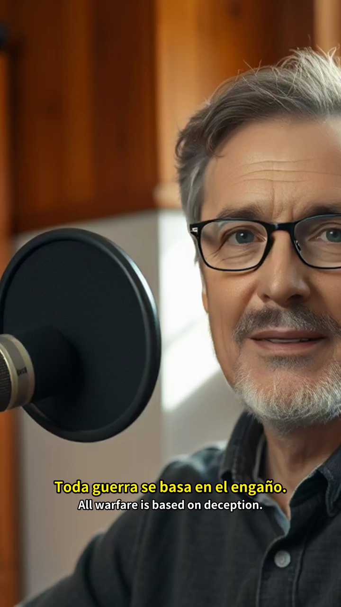
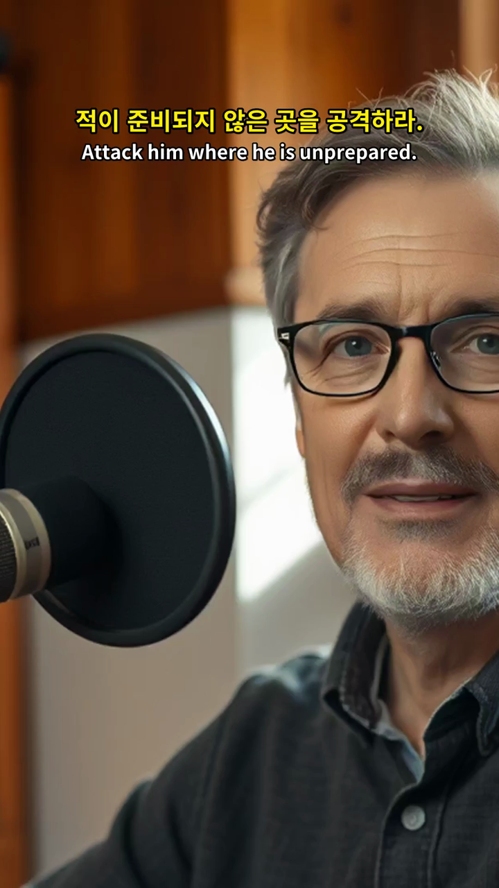

A 30-minute talk usually holds a handful of moments that work on their own: a clear claim, a list, a short story. Finding them, cutting them to 9:16, timing subtitles and translating them is the slow part. This walkthrough shows the whole process with one public-domain recording, using Shorts Translate, an agent that runs on Capafy.
Upload the file in the chat, or send a Dropbox or Google Drive share link to your own file. YouTube and other site links are not accepted, so the tool only works with videos you have.
For this example we used a reading of The Art of War (Lionel Giles translation) from LibriVox, which is in the public domain, over a still studio image.
We asked for Spanish at the bottom, medium size, and later Korean at the top, large.
Speech recognition runs inside the agent's sandbox. Claude then reads the transcript, picks five self-contained 30-60 second moments, translates the subtitle lines and checks each translated line against its original. For every clip you also get why it was picked, 3 title ideas, an opening hook and hashtags, written from that clip's own transcript.
A 30-minute video takes about 4-6 minutes. Here is part of the clip list from our sample (real output):
## Clip 1 · 0:25-1:05 (40 s)
- Why this moment: Presenta de forma directa el tema central de Sun Tzu: el arte de la guerra es cuestión de vida o muerte y no puede descuidarse.
- Title ideas: El arte de la guerra: vida o muerte / Sun Tzu y la importancia de la guerra / La lección de Sun Tzu sobre el peligro
- Opening hook: Sun Tzu decía que la guerra es cuestión de vida o muerte, y no puedes ignorarla.
- Hashtags: #SunTzu #ElArteDeLaGuerra #Filosofia #EstrategiaThe translation is on top in yellow and the original line is below it, so viewers who speak either language can follow.


Want the subtitles at the top, or bigger? Ask for it — the same clips are re-rendered. Another language works too: the transcript is reused and the agent picks moments and writes titles in that language. Neither counts as a new video, and a re-render takes about 1-2 minutes.
Try it: Shorts Translate on Capafy